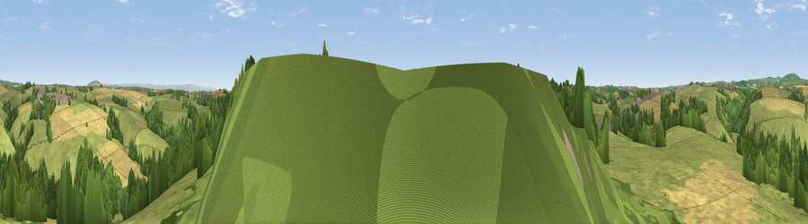

Viewpoint near Menheniot
#15699 in England · top 27% of its area beats it · near MenheniotWhere it is
The exact computed spot (SX 28425 61475). Click the marker for map links.
The view, rendered

A 360° render of this exact spot computed from the terrain model, tree cover and land cover — summer colours, afternoon light, calibrated against photographs of famous viewpoints. Real trees, hedges and buildings will differ in detail.
The panorama
Grey silhouette: terrain skyline in each direction (720 bearings, Earth curvature and refraction included). Dashed green: skyline with trees (+15 m) and buildings (+8 m) as obstacles. Blue strip: how far the ground is visible on each bearing.
Where the view opens
Wedge length = distance to the farthest visible ground on that bearing (vegetation-aware). Rings at 10, 25 and 50 km.
What fills the view
42% woodland · 39% grassland · 15% cropland · 3% water ·
Angular shares of the visible panorama (visual magnitude), not map area. Landscape diversity 0.51 (0–1 Shannon).
Key numbers
More beautiful places nearby
The staircase of upgrades: each row has a higher view potential than everything closer. Driving times are estimates from straight-line distance, calibrated against real road routing — check an actual route before setting out.
| Place | Direction | Drive | Score |
|---|---|---|---|
| Viewpoint near Menheniot | E · 3 km | ~7 min | 64.0 |
| Viewpoint near Morval | SSE · 3 km | ~8 min | 75.0 |
| Bin Down | SSW · 4 km | ~9 min | 80.2 |
| Viewpoint near Seaton | S · 7 km | ~14 min | 81.1 |
| Viewpoint near Downderry | SSE · 7 km | ~15 min | 81.5 |
| Viewpoint near Downderry | SE · 9 km | ~18 min | 83.5 |
| Viewpoint near Polperro | SW · 14 km | ~26 min | 83.7 |
| Pencarrow Head | SW · 17 km | ~29 min | 86.0 |
50.42800, -4.41699 · source: screening · position refined by local search. Computed location — check access rights before visiting.